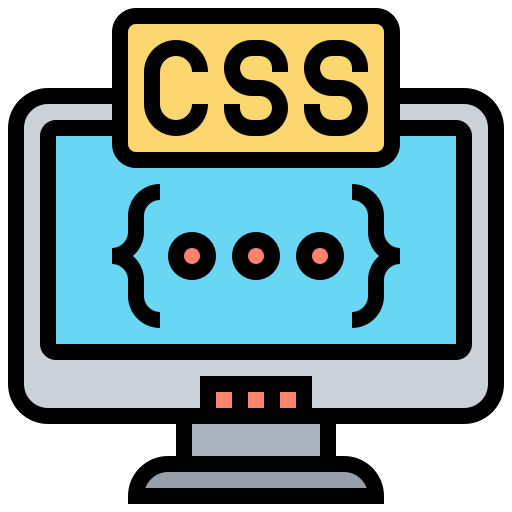
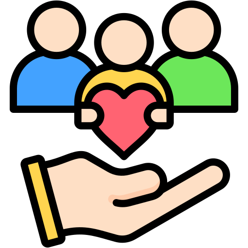
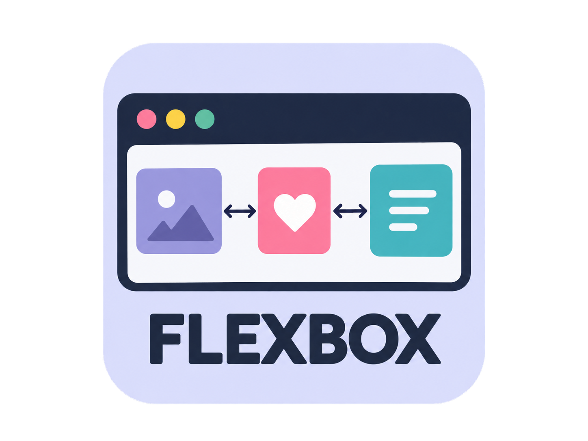
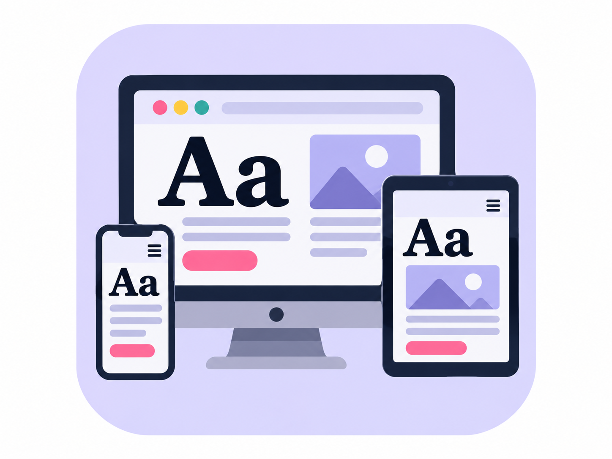

Mary McCarthy
Junior web designer in Northern Virginia.
View my workAbout me
Hello, Please feel free to look over my page. I am new to junior web design that loves to combine her creativity to make unique webpages.
Skills
- HTML
- CSS
- Digital Photography
- Canva
- Data Entry
- Customer Service
Selected projects

HTML
I use HTML to create pages.

CSS
I use CSS to create interesting designs.
Digital Photography
I enjoy using original photography to personalize website designs.
Canva
I use Canva to create creative designs and graphics.

Customer Satisfaction
Providing ongoing support during and after project completion is important.
GitHub
Experienced with using Github.

Flexbox
We learned how to create flexbox which allows a responsive design for different parts of the page
View Flexbox ProjectResponsive Images + Responsive Video
We learned how to add images and video that would be viewable on different devices.
View Responsive Images + Responsive Video Project
Responsive Web Design - Typography
We learned to work with clamp code to help with typography
Responsive Web Design - Typography Project